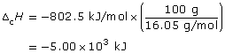
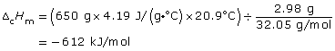

Module 1—Thinking Energy
 Explore
Explore
 Read
Read
In Lesson 4 you learned about enthalpy change. An enthalpy change occurs in every chemical reaction due to the change in potential energy associated with the change in bonding of the atoms involved. The energy change associated with a chemical reaction is called the enthalpy of reaction.
It may not surprise you that overall energy changes associated with a reaction depend on the quantity of matter involved. For example, to get more heat out of your campfire for your ecotour participants, you would put more wood, or fuel, on the fire. It might surprise you that enthalpy change is not the same for all combustion reactions. You may have encountered this when you noticed that some fuels appear to release more energy than others when they combust.
How do you compare the enthalpy of reaction for different reactions? Read page 490 and work through “Sample problem 11.2” and “Communication example 3” on page 491 in the textbook to find out.
 Try This
Try This
Molar Enthalpy of Fuel Combustion
Later in this lesson you will be asked to compare fuels. You will be
given information about the molar enthalpy of reaction for each of the
fuels to be compared. What does this information mean? Can you guess
how a molar enthalpy of reaction for each fuel was determined?
TR 1. State the purpose of determining a molar enthalpy of combustion for different fuels.
TR 2. Describe an experiment that could be used to determine the molar enthalpy of combustion for a fuel. You may wish to determine the values you would need to measure during your experiment and then draft a formula that uses all your measured values.
Read the bottom section of page 491 in the textbook for help
completing your description.
Read
The enthalpy of reaction is the change in enthalpy of a chemical system. Molar enthalpy is a change in enthalpy of a chemical system per mole. Molar enthalpy is helpful when assessing different fuels—just as “apples to apples” are compared in everyday life, molar enthalpy allows comparing “moles to moles” in chemistry.
Work through “Communication example 4” on page 492 in the textbook.
 Self-Check
Self-Check
SC 1. Complete “Practice” questions 9–13 on page 492 in the textbook.
Self-Check Answers
Contact your teacher if your answers vary significantly from the answers provided here.
SC 1.
Practice 9.
a. ΔfH
b. ΔdH
c. ΔfHm
d. ΔdHm
Practice 10.
|
Similarities |
Differences |
|
Both contain the Δ and H symbols. |
In molar enthalpy, the final character is a subscript lower-case m, indicating molar. |
|
Both represent the energy change when a chemical change occurs. |
The molar enthalpy of reaction is for a defined quantity of substance, one mole of a reactant or a product, involved in the reaction being studied. |
Practice 11.
A positive value indicates that the process described is an endothermic
process (energy is absorbed by the system when the reaction occurs). A
negative value means that the process is exothermic (energy is released
by the system when the reaction occurs).
Practice 12.

Practice 13.
